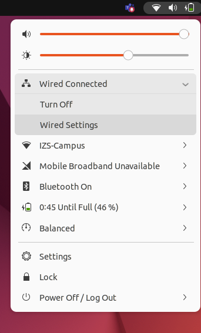
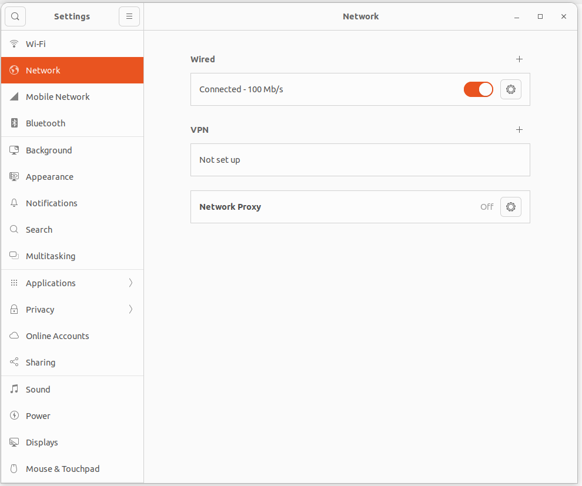

5. CONNECTING REAL HARDWARE
You have created a new moveit config package for the custom UR5 URDF and used the demo.launch.py to get a quick feel for how it works with RVIZ. This method is useful for quickly verifying the setup assistant process and the validity of the URDF. Unfortunately, what it executes is just fake controllers for this reason. Further configuration is necessary to fully connect Moveit and the real controllers. This tutorial will show you how to do this for the ur_robot_driver.
In case you haven’t correctly completed the previous workshop, you can use the following commands to checkout the correct tag:
cd /home/ws/src/ur5e_cell
git fetch --all --tags
git checkout 2-connecting-real-hardware-workshop
5.1. Creating the real hardware launchfile for ur5e_robot_cell
The ur_robot_driver package provides us with a highly configurable launch file to connect to the real robot hardware. We are now going to create a launchfile for our application, that uses launchfiles provided by ur_robot_driver and by moveit setup assistant to launch our robot cell.
Create a file called
robot.launch.pyin theur5e_cell_moveit_config/launchfolder.The first step is to import the dependencies we need for this launch file. We are going to use standard items from the launch and launch_ros library. Furthermore, we are using som functions from moveit_configs_utils and launch_ros_extras packages (see below).
from launch import LaunchDescription
from launch.actions import DeclareLaunchArgument, IncludeLaunchDescription
from launch.conditions import IfCondition
from launch.launch_description_sources import PythonLaunchDescriptionSource
from launch.substitutions import LaunchConfiguration, PathJoinSubstitution
from launch_ros.substitutions import FindPackageShare
from launch_ros_extras.actions import LoadMoveitConfig, GenerateMoveitLaunch
from moveit_configs_utils.launch_utils import DeclareBooleanLaunchArg
from moveit_configs_utils.launches import (
generate_move_group_launch,
generate_moveit_rviz_launch,
)
Every launch file has
generate_launch_descriptionfunction, which returns theLaunchDescriptionwith all entities we want to launch.
def generate_launch_description() -> LaunchDescription:
Add the launch arguments we need as input from the user (e.g. the IP of the robot).
database_config = DeclareBooleanLaunchArg(
"db",
default_value=False,
description="By default, we do not start a database (it can be large)",
)
debug_config = DeclareBooleanLaunchArg(
"debug",
default_value=False,
description="By default, we are not in debug mode",
)
rviz_config = DeclareBooleanLaunchArg(
"use_rviz",
default_value=True,
description="Whether to use RVIZ or not."
)
robot_ip_config = DeclareLaunchArgument(
name="robot_ip",
default_value="192.168.56.2",
description="The IP address of the robot to connect to."
)
Now we want to load the moveit configuration and launch the move_group node (the main node of moveit) as well as the rviz (if the user wants rviz to be launched). To do this we use the
launch_ros_extraspackage and functions provided by themoveit_configs_utilspackage.
load_moveit_config = LoadMoveitConfig(
robot_name="ur5e_workcell_fake",
package_name="ur5e_cell_moveit_config")
generate_move_group_ld = GenerateMoveitLaunch(
function=generate_move_group_launch
)
generate_moveit_rviz_ld = GenerateMoveitLaunch(
function=generate_moveit_rviz_launch,
condition=IfCondition(LaunchConfiguration("use_rviz"))
)
Then it is time to include the
ur_control.launch.pylaunch file provided by theur_robot_driverpackage, which contains everything that is necessary to connect to the real hardware. We use the launch arguments to configure the driver for our purpose.
ur_control_launch = IncludeLaunchDescription(
launch_description_source=PythonLaunchDescriptionSource(
PathJoinSubstitution([FindPackageShare("ur_robot_driver"), "launch", "ur_control.launch.py"])
),
launch_arguments={
"ur_type": "ur5e",
"use_fake_hardware": "false",
"initial_joint_controller": "joint_trajectory_controller",
"activate_joint_controller": "true",
"robot_ip": LaunchConfiguration("robot_ip"),
"description_package": "ur5e_cell_description",
"description_file": "workcell.urdf.xacro",
"launch_rviz": "false"
}.items()
)
Finally, we need to add all launch entities we created to the
LaunchDescriptionand return it. When adding the entities it is important to use the right order. We need to first launch the arguments, then load the configuration, launch the hardware and finally launch move_group and rviz.
ld = LaunchDescription(
[
database_config,
debug_config,
rviz_config,
robot_ip_config,
load_moveit_config,
ur_control_launch,
generate_move_group_ld,
generate_moveit_rviz_ld,
]
)
return ld
Now the launchfile is complete and you can rebuild your workspace by using the following command.
colcon build --packages-select ur5e_cell_moveit_config
5.2. Connecting to the robot
In order to connect to the real robot, you need to setup your network connection correctly.
Our robot here at Fraunhofer IPA has the IP address 192.168.56.2. The ROS PC is directly
connected to the robot via an ethernet cable. The ROS PC has the IP address 192.168.56.1.
You will need to create a static network configuration on your ROS PC to connect to the robot.
Open the `Ẁired Settings`` menu on your Ubuntu PC. You find this if you click on the Wifi, Speaker and Battery icon in the top right corner of your screen.

Create a new wired connection configuration by clicking on the
+button next to Wired.

Call it something like
UR5E_ROBOTand switch to the IPv4 tab. SelectManualand enter the IP address192.168.56.1and the subnet mask255.255.255.0. Click onSave.
You are now ready to connect to the robot. You can test your connection by pinging the robot from your ROS PC. When you are connected to the
choose the correct network interface in the Wired dropdown menu. You can now ping the robot by using the following command from a normal terminal (won’t work in the docker container as ping is not installed).
ping 192.168.56.2
If you get a response, you are ready to connect to the robot. If not, check your network configuration again (switching it off completely and on again might help).
Now you can launch the moveit launchfile. You can do this by using the following command.
ros2 launch ur5e_moveit_config robot.launch.py
On the ROBOT GUI you need to activate the remote connection programm. No everything should be well and you can start planning and executing trajectories on the real robot.
Note
It might be necessary to restart the docker container so that it picks up the new network configuration. To do this, open the command palette (Ctrl+Shift+P) and type DevContainers: Reopen folder locally, then DevContainers: Reopen in Container.
5.3. Introspection
Launch the RQT Graph tool again to observe what the computation graph looks like now.
If you had saved the previous graph, you would notice that the /robot_state_publisher came previously from a /move_group/fake_controller_joint_states node whereas now it comes from Gazebo/real robot, telling us that the actual robot is being tracked.
You will also notice a new /arm_controller/follow_joint_trajectory action, which now drives the sim/actual robot.
When you execute a valid plan, echo in terminal the topics in this action, specifically the goal, status and result topics, to see what is being published. The goal shows you what the computed trajectory precisely looks like. This one set of values is the result of the complete Moveit pipeline.